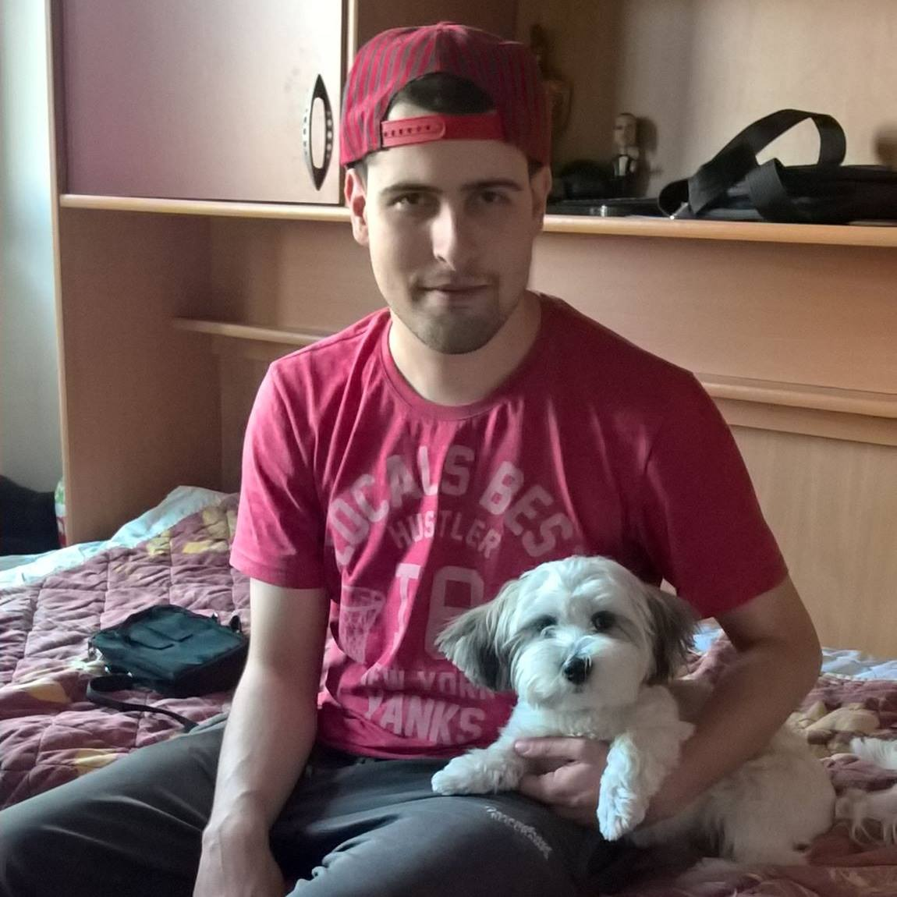

{{message}}

Profile
I am responsible and reliable. Always ready for new challenges and professional training.
I can work alone, but also efficiently and as part of the project team.
Programming attracts me the most because of the necessary creativity and innovation in finding possible ways of realization of project tasks.
I always look at the problems from different angles and see different solutions. I am also interested to work in the field of computer networks
Projects
Visual Studio ( 2012, 2013, 2015 )
-“Console Application”, entering and printing arrays, working with "for and do - while" loops, functions, etc.
-“Windows Form Application”, creating applications for entering and printing the given data to the database and also creating TreeView nodes.
-Created a calculator with arithmetical functions ( addition, subtraction, multiplication, division) using windows forms and C# code
-“ASP.NET MVC”, create HTML pages with CSS, bootstrap,jQuery, browser add-ons, also creating databases and linking.
SQL Server Management Studio ( 2012 )
-Creating, deleting and managing tables in databases.
SQL Server Data Tools for Visual Studio ( 2012 )
-“Integration Services Project”, export and import data from database, ”txt” and “xls” files.
-“Report Server Project”, creating database report.